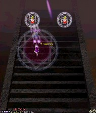
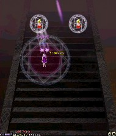

ステージ開始直後は“白玉楼階段の幻闘”
の文字のすぐ横で低速ショットを打ちながら雑魚に備えよう。
途中で弾幕が激しくなるが、ここはアイテムを気にせずに低速で落ち着いて避けよう。

急に大人しくなってから出てくる7方向に橙色と黄色の弾を撃つ雑魚は、出現する瞬間に低速ショットで速攻撃破。


その次に2体出てくるが、片方だけ撃破して残りは放置するのもよし。
ステージ開始直後は“白玉楼階段の幻闘”
の文字のすぐ横で低速ショットを打ちながら雑魚に備えよう。
途中で弾幕が激しくなるが、ここはアイテムを気にせずに低速で落ち着いて避けよう。
急に大人しくなってから出てくる7方向に橙色と黄色の弾を撃つ雑魚は、出現する瞬間に低速ショットで速攻撃破。

その次に2体出てくるが、片方だけ撃破して残りは放置するのもよし。
クロスして挟み込むような黄色と水色の弾を撃ち、緑と黄色の似たような弾を出し、赤と青のくさび弾を撃つ。
中ボスとの会話中は中ボスの左上で待機して会話終了後に画像の矢印のようにカタカナの「フ」の字に動いて妖夢の弾を誘導すると、
最初の弾幕を避けるのがだんぜん楽になる。
赤と青のくさび弾は、青が自機狙いなのでちょっと横に動いて避け、赤は自機の周りを狙うだけで動かなければ自機には当たらない。
細かく避けるのが苦手な人はボムを使ってさっさと終わらせよう。
妖夢が大量の青弾をバラ撒いてスローモーションする攻撃。
妖夢と逆の位置にいれば弾が薄いので避け易い。
でも固定弾じゃないので油断は禁物。
中ボス後、最初の左から出現する雑魚は弾が多いけど、自機狙いの弾なので右側へチョン避けしよう。
その次の右から現れる雑魚は弾速が遅いのでじっくり見極めれば避けれる。
大きく避けようとすると事故るので低速で小さめで。